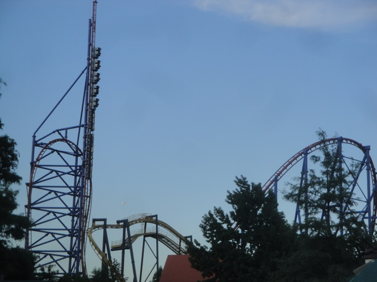
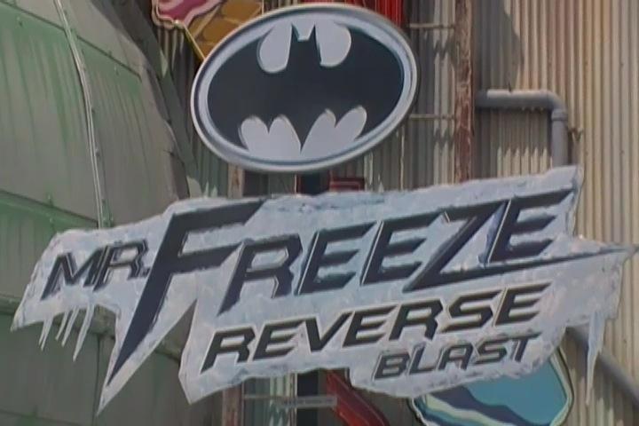

| |
Mr. Freeze: Reverse Blast Review
Today at Six Flags Over Texas, we're going to review Mr. Freeze, the parks shuttle coaster. Now before we even start talking about how Mr. Freeze as a ride itself is, there are three things about that this ride that totally kick ass and must be adressed right now. First of all, Mr. Freeze is a shuttle coaster that does something most enthusiasts would say is physically impossible. It runs two trains. So how does Mr. Freeze do it without crashing? It has a duel station. It's so obvious, and yet so genius. It makes every other shuttle coaster seem to have crappy operations when we'd usually shrug it off and say "It has to have one train operations." BULLSH*T!!! And sadly, even with the duel station and two train operations, the operations are still terrible. *Sigh* Oh Six Flags Over Texas. Work on your operations please. And now Mr. Freeze runs backwards. So this whole review is gonna be backwards (Though don't worry. I got to experience it forewards at Six Flags St. Louis). Anyways, we then head over to the launch track. We sit, we wait, and, then we hear a horn blast. And just like that, we launch. The launch on Mr. Freeze is actually pretty damn strong. And considering that it's backwards, it's even better. This is much better than the launch on Superman: Escape from Krypton. We need more backwards launches please. We then rip into broad daylight and rise up into the inverted top hat. It's kind of like on Xcelerator, except instead of getting a pop of airtime, we get a freaky sensation of hangtime. It's almost like upsidedown airtime. And backwards, you just have no idea what's going on. You're just rising up, twisting, and upsidedown. BOOM!!! LOVE IT!! LOVE IT!!! But whatever you want to call it, it simply proves that we need more inverted top hats. We then fall down from the inverted top hat and soar into the overbanked turn. Again, it's just like Xcelerator. Launch, Top Hat, Overbank, My God. These two rides have way more in common than I originally thought. Like on Xcelerator, the overbank is just fun, but a little disorienting backwards. We then rise up into the sky, just heading up facing the ground, not knowing how high we're going. Now here's a real treat for us. This vertical spike actually has a mini launch to push us all the way up to the top. That's just freaking awesome. And yep, now we fall back down and do everything forewards, which is still a lot of fun. The overbanked is just an overbanked, but still fun. But then comes the inverted top hat. I love that I get to do this element twice. Seriously, why don't any of the Intamin Rocket Coasters have Inverted Top Hats instead of normal Top Hats? And after that epicness, our ride was over, and man did it kick ass. This ride is totally awesome. Definetly check it out when at Six Flags Over Texas, even if you've been on the SFSL version.
8/10
Location: Six Flags Over Texas
Opened in 1998
Mr Freeze Reverse Blast started going backwards in 2012
Built by: Premier
Last Ridden: July 18, 2013
I have ridden this exact same ride at the following parks.
Six Flags St Louis
Mr. Freeze Photos




Home
|